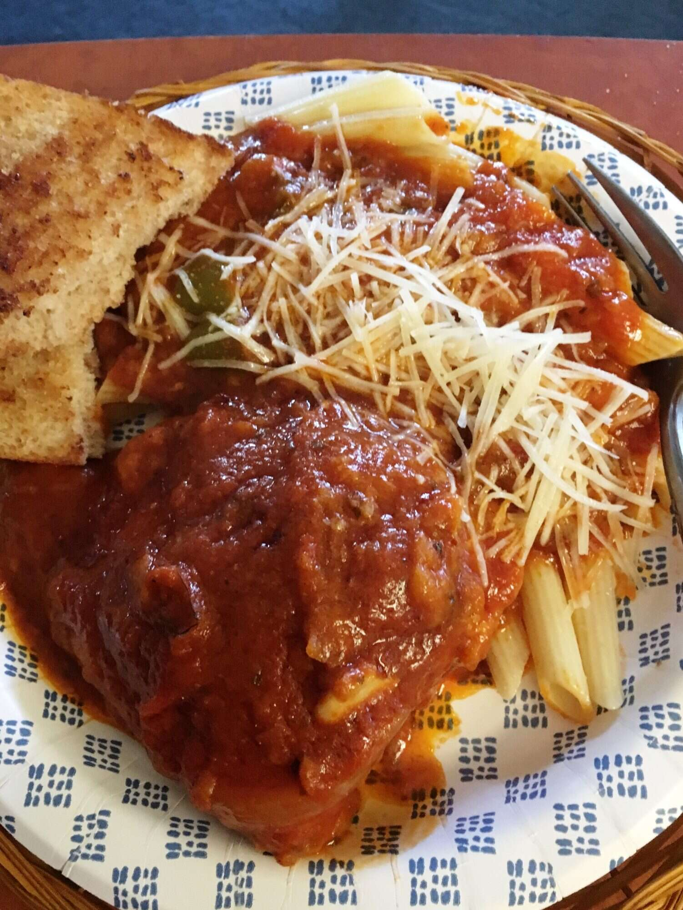

Cacciatore

Pollo alla Cacciatore
Cacciatore means "hunter" in Italian. In cuisine, alla cacciatora refers to a meal prepared "hunter-style" with onions, herbs, usually tomatoes, often bell peppers, and sometimes wine.
Ingredients
- 3 bone-in chicken legs with skin
- ¼ cup all purpose flour
- ¼ cup of olive oil
- 1 medium green bell pepper, cut into 2-inch pieces
- 1/2 small onion, sliced
- all sorts of pepper
Step 1
- Dip chicken pieces in flour and shake off excess
Step 2
- Heat oil in a 10-inch skillet over medium-high heat. Add chicken and brown well, 4 to 5 minutes per side. Remove chicken from the pan and set aside. Drain most of the oil from skillet, leaving about 1/8 inch
Step 3
- Add bell pepper, onion, garlic, oregano, pepper flakes, salt and pepper to the skillet. Saute ,stirring constantly, for 2 minutes. Pour in spaghetti sauce and add enough water to thin mixture just a little; sauce over chicken to coat and bring to simmer.
Step 4
- Cover, lower heat, and cook, turning chicken and scrapping the bottom of the pan often, chicken is no longer pink at the bone and the juices run clear, about 40 minutes
Return to index